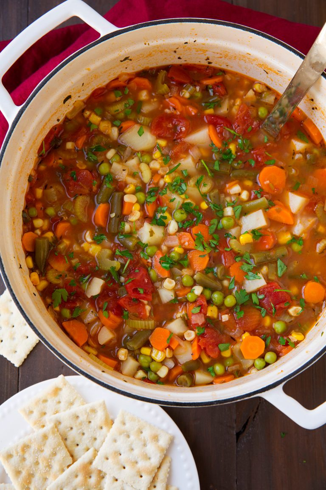

Vegetable Soup

Description
Not only is this soup delicious, but it’s also so easy to make.
It just takes some chopping of ingredients and a bit of simmering
until you’ve got a soup everyone will love!
This is a recipe you’ll definitely want to add to your dinner or
lunch rotation. And it yields a pot full and makes great leftovers!
Ingredients
- 2 Tbsp olive oil
- 1 1/2 cups chopped yellow onion (1 medium)
- 2 cups chopped carrots (about 5)
- 1 1/4 cups chopped celery (about 3)
- 4 cloves garlic, minced
- 4 (14.5 oz) cans chicken broth or vegetable broth
- 2 (14.5 oz) cans diced tomatoes (undrained)
- 3 cups peeled and diced potatoes (about 3 medium)
- 1/3 cup chopped fresh parsley
- 2 bay leaves
- 1/2 tsp dried thyme, or 1 Tbsp fresh thyme leaves
- Salt and freshley ground black pepper
- 1 1/2 cups chopped, frozen, or fresh green beans
Instructions
- Heat olive oil in a large pot over medium-high heat
- Add onions, carrots, and celery and saute 4 minutes.
- Add garlic and saute 30 seconds longer
- Add in broth, tomatoes, potatoes, parsley, bay leaves, thyme,
and season with salt and pepper to taste.
- Bring to a boil, then add green beans.
- Reduce heat to medium-low, cover and simmer until potatoes are
fully tender, about 25-35 minutes.
Notes
- For more flavor add in more dried herbs (or even triple the amount
of dried thyme). Other good herbs to add include basil, oregano,
rosemary, marjoram, or Italian seasoning.
- Another option to add more flavor is to use a homemade chicken
stock or vegetable broth.
- Optionally you can finish servings with grated parmesan and a
splash of extra virgin olive oil.
Home